84kg · 每周 2 次 · 做完还剩 3 次力气（RIR 3）
3 组 × 12 次 · 85kg（三组同重）· 组间 90″
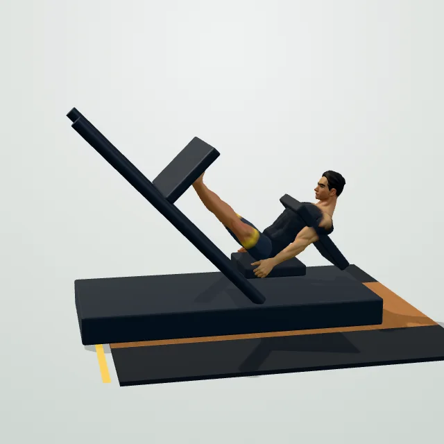
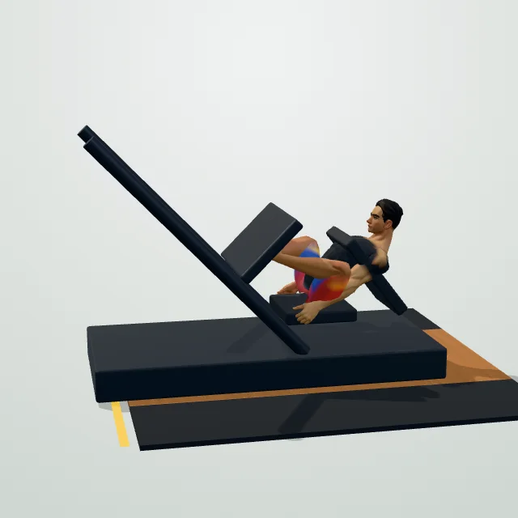
🎯 屁股用胶水粘在垫子上
⚠️ 屁股一离垫，重量就全压在腰椎上 —— 这是腿举唯一会让你躺三天的错
详细图文 →3 组 × 12 次 · 找「还剩 3 次」的重量 · 组间 90″
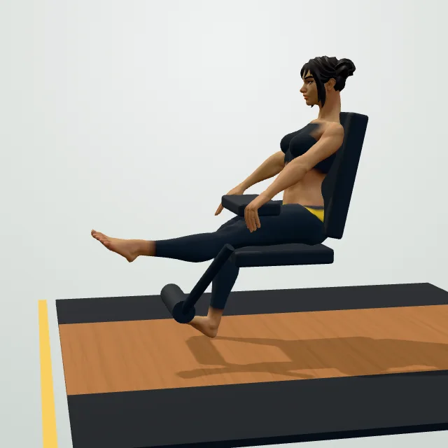
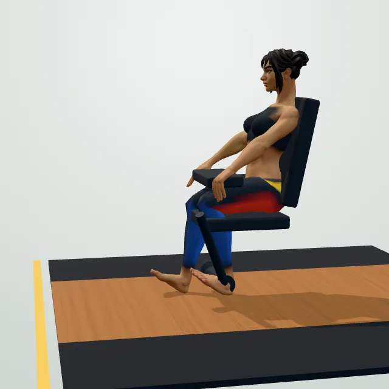
🎯 放回时数「1 — 2 — 3」
⚠️ 新手最容易「甩下去」—— 慢放的那 3 秒，才是真正长肌肉的地方
详细图文 →2 组 × 12 次 · 32kg 起 · 组间 60″ （可选）
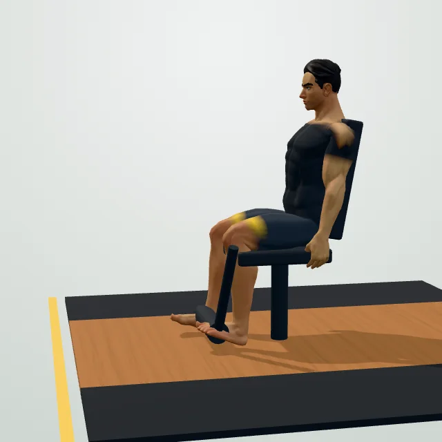
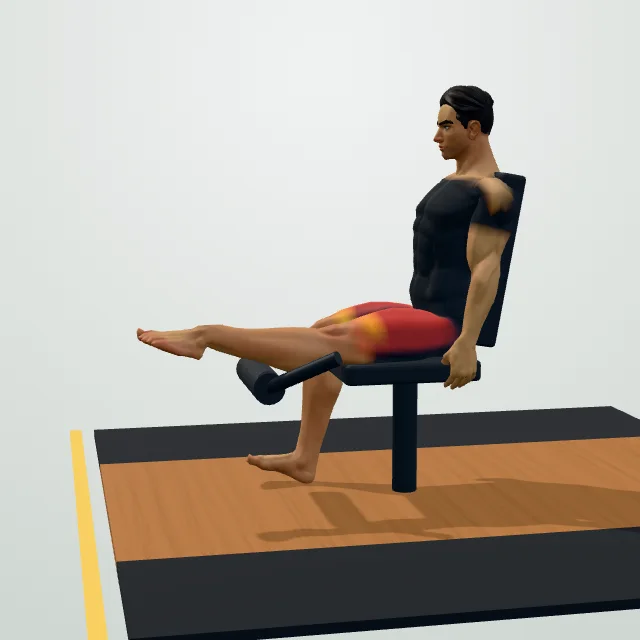
🎯 顶端停 1 秒，再慢慢放
⚠️ 甩腿靠惯性 = 白练；这个动作只做 2 组，别贪多（股四头练太多会加剧前后失衡）
详细图文 →3 组 × 12 次 · 必须记重量 · 组间 90″
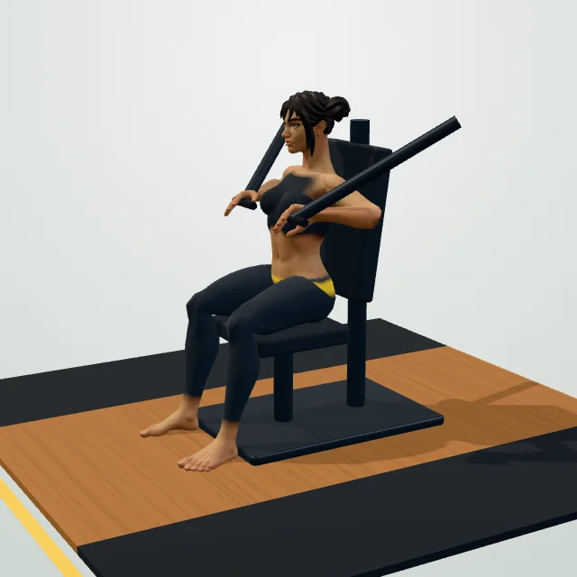
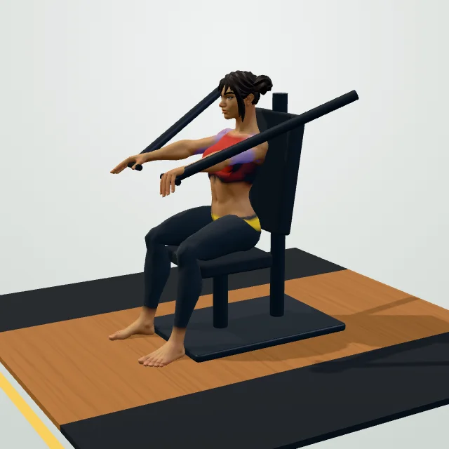
🎯 先把两块肩胛骨塞进后裤兜，再推
⚠️ 肩膀往前顶 = 肩关节痛，新手最高频的伤
详细图文 →3 组 × 12 次 · 找 RIR 3 的重量 · 组间 90″
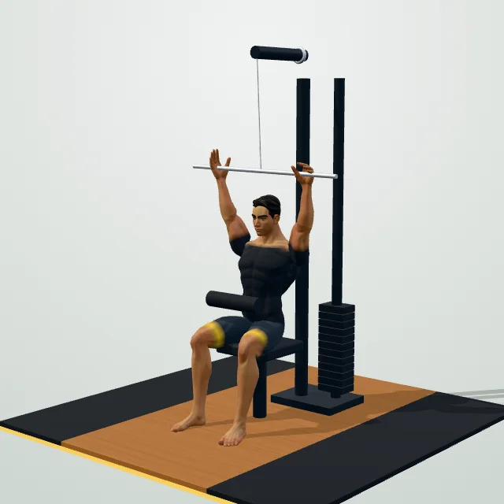
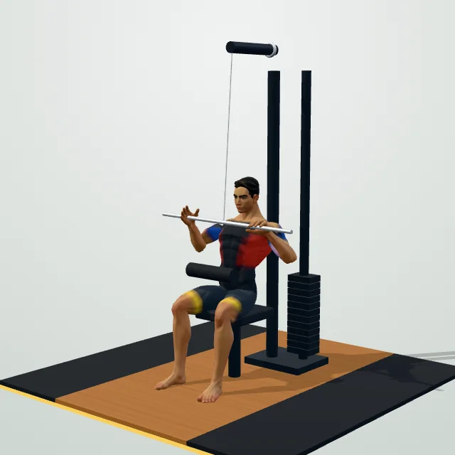
🎯 想象「用手肘砸地板」
⚠️ 用手臂硬拉 = 练成二头；身体后仰太多 = 借力。先沉肩再拉
详细图文 →3 组 × 12 次 · 找 RIR 3 的重量 · 组间 90″
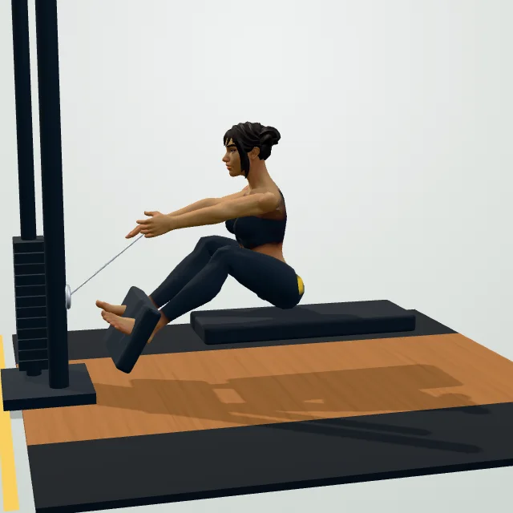
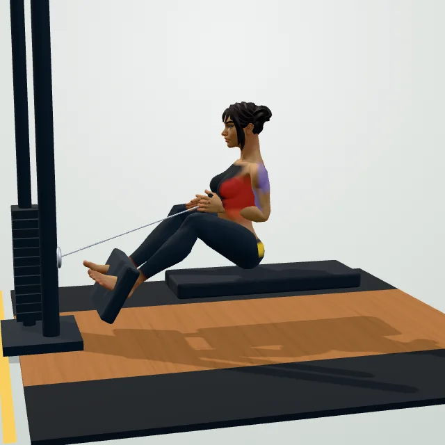
🎯 把胸口挺给对面的人看
⚠️ 圆背 = 腰椎受力；耸肩 = 斜方肌代偿。肩胛先收再拉
详细图文 →2 组 × 12 次 · 宁轻不重 · 组间 60″
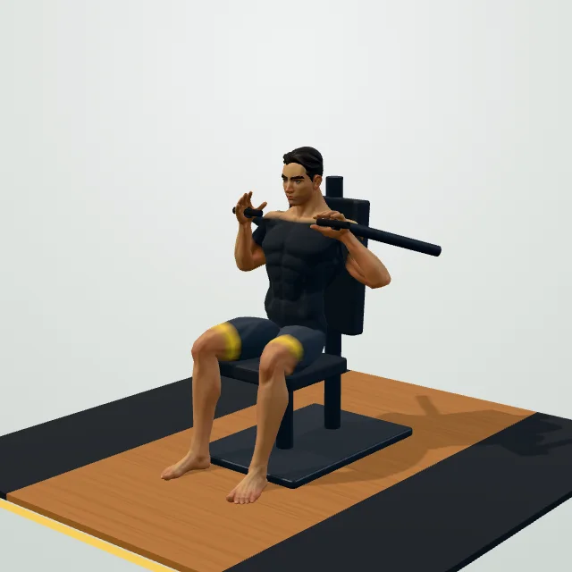
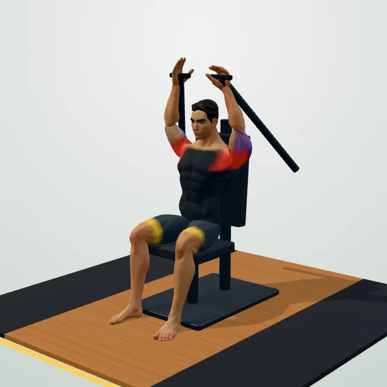
🎯 肋骨往下沉，像把肋骨塞进肚子
⚠️ 腰反弓 = 用腰推肩；重量宁轻不重，肩关节最不耐造
详细图文 →3 组 × 30–45 秒 · 组间 45″
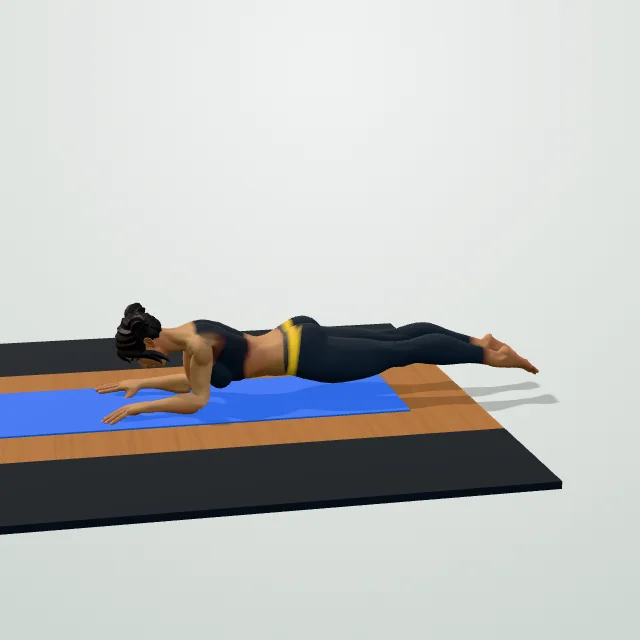
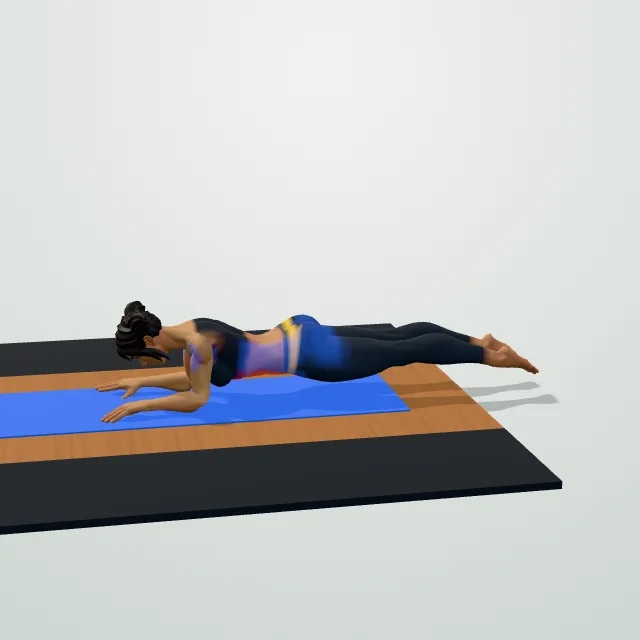
🎯 夹紧屁股，像夹住一张纸
⚠️ 塌腰 = 腰椎受压；撅臀 = 核心没发力。正常呼吸，别憋气
详细图文 →